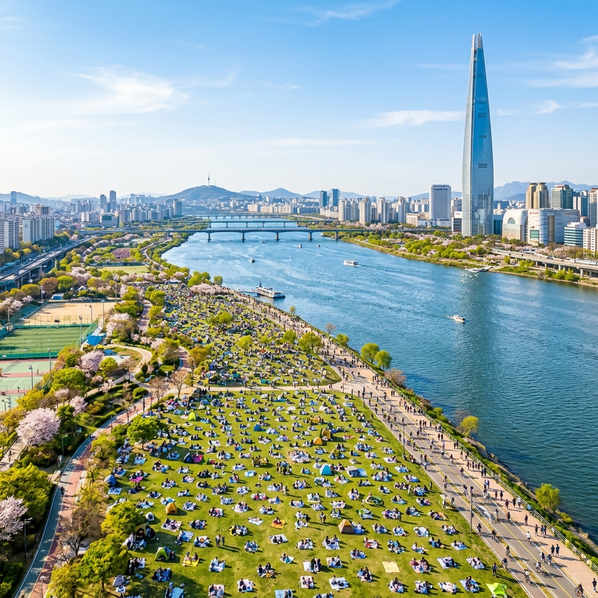
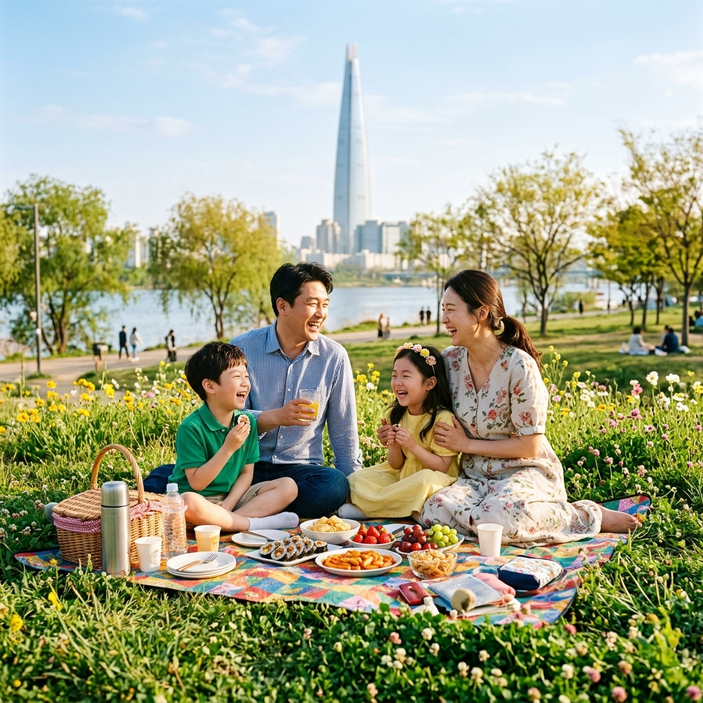
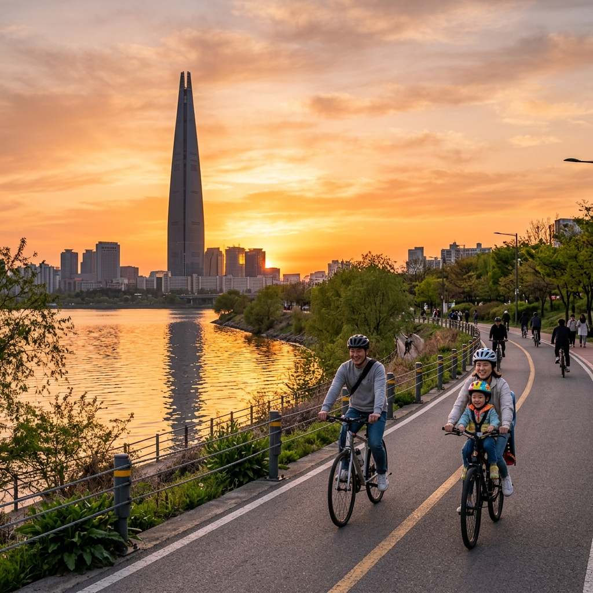

서울 잠실 한강공원 봄 피크닉 2026: 한강 봄소풍 페스티벌 돗자리 명당 & 자전거 코스 완벽 가이드
도심 한복판에서 탁 트인 하늘과 반짝이는 강물을 바라보며 돗자리를 펼치고, 아이와 함께 자전거를 달리는 봄날의 한강 피크닉. 서울 생활의 가장 큰 특권이자, 5월이면 어김없이 찾아오는 설렘입니다. 서울 잠실 한강공원은 수도권 최대 규모의 한강 피크닉 명소로, 넓디넓은 잔디광장, 최신 시설의 자전거 도로, 다채로운 먹거리 트럭, 그리고 배경처럼 솟아 있는 롯데월드타워의 스카이라인이 모여 완벽한 봄 소풍 무대를 완성합니다. 2026년 봄, 한강 봄소풍 페스티벌과 함께하는 잠실 한강공원 완벽 가이드를 지금 확인해보세요.
| 항목 | 내용 |
|---|
| 위치 | 서울특별시 송파구 잠실동 40-1 일원 (잠실 한강공원) |
| 운영 시간 | 24시간 상시 개방 (편의 시설 운영 시간 별도) |
| 입장료 | 무료 |
| 교통 | 2호선 잠실나루역 1번 출구 도보 5분 / 8호선 몽촌토성역 1번 출구 도보 10분 |
| 주차 | 공원 내 유료 주차장 운영 (주말 극혼잡) |
🌊 1. 잠실 한강공원, 5월 봄 피크닉의 최적지
서울 한강변을 따라 형성된 수십 개의 한강 공원 중에서도 잠실 한강공원은 단연 독보적인 존재감을 자랑합니다. 2호선 잠실나루역에서 도보 5분, 총 면적 약 80만 ㎡에 달하는 이 공원은 서울 도심에서 가장 넓고 다양한 야외 활동을 즐길 수 있는 공간으로, 특히 5월 봄에는 초록빛 잔디와 강물이 어우러진 풍경이 최고의 절정을 이룹니다.
잠실 한강공원이 여타 한강공원과 차별화되는 가장 큰 이유는 바로 롯데월드타워 뷰입니다. 국내에서 가장 높은 건물인 555m 롯데월드타워를 배경으로 펼쳐지는 한강 풍경은 서울만이 선사할 수 있는 압도적인 도시 경관을 완성합니다. 특히 해질 무렵 롯데타워 외벽을 물들이는 노을 빛과 강물에 비치는 황금빛 반사광은 어떤 사진 필터도 필요 없는 천연 절경입니다.
5월 잠실 한강공원을 특별하게 만드는 또 다른 요소는 강변 수변 식물들의 생명력입니다. 강가를 따라 심어진 버드나무와 메타세쿼이아가 연두색 새잎을 틔우고, 잔디광장 곳곳에 봄꽃이 피어나는 5월의 한강은 도시 생활에 지친 현대인들에게 자연이 주는 최고의 선물입니다. 한강 물안개가 피어오르는 이른 아침 잠실 한강공원의 고요함은 도심 속에서 누릴 수 있는 가장 순수한 힐링이기도 합니다.

[잠실 한강공원 봄 전경] / AI 생성 이미지
🎪 2. 2026 한강 봄소풍 페스티벌 완전 가이드
서울시 한강사업본부가 매년 5월에 주최하는 한강 봄소풍 페스티벌은 잠실 한강공원을 중심으로 반포, 여의도 등 주요 한강공원에서 동시 진행되는 대규모 봄 축제입니다. 2026년에도 5월 초중순을 전후해 3~4주간 이어지는 이 행사에서는 다채로운 공연, 체험 프로그램, 마켓, 스포츠 이벤트 등이 한데 어우러집니다.
페스티벌의 핵심 콘텐츠는 매주 주말마다 한강 수상 무대에서 펼쳐지는 무료 야외 음악 공연입니다. 인디 밴드부터 클래식 앙상블까지 다양한 장르의 뮤지션들이 강바람을 타고 흘러오는 선율로 피크닉 분위기를 최고조로 끌어올립니다. 5월 초에는 가정의 달 테마 가족 콘서트가, 5월 중순에는 청춘 음악 페스티벌이 예정되어 있으며 모든 공연은 무료 관람입니다.
페스티벌 기간에는 푸드 트럭 페어도 함께 운영됩니다. 50~80개에 달하는 다양한 음식 트럭이 공원 입구와 광장 주변에 집결해, 타코, 벨기에 와플, 수제 버거, 한식 퓨전 요리, 디저트 음료 등 세계 각국의 먹거리를 제공합니다. 특히 한강 야경을 보며 먹는 치맥은 잠실 한강공원의 대표 경험으로, 저녁 시간대 편의점과 치킨 배달 서비스는 여전히 인기가 높습니다.
🎯 3. 잠실 한강공원 돗자리 명당 TOP 5
잠실 한강공원을 100% 즐기려면 좋은 자리 선점이 관건입니다. 어떤 자리를 잡느냐에 따라 뷰, 그늘, 바람, 소음 등 피크닉 환경이 크게 달라지므로, 아래 명당 정보를 참고해 전략적으로 자리를 잡으세요.
1위: 수변 데크 북쪽 잔디밭 — 롯데월드타워와 한강을 동시에 조망할 수 있는 최고의 뷰 포인트입니다. 오전 11시 이전에 도착하면 나무 그늘과 강바람을 동시에 누릴 수 있으며, 저녁 노을 감상에도 최적입니다.
2위: 세빛섬 방면 잔디 언덕 — 공원 서쪽 끝에 위치한 완만한 언덕 형태의 잔디밭으로, 자연스러운 경사 덕분에 한강 수면을 내려다보는 느낌이 들어 특별한 뷰를 즐길 수 있습니다. 비교적 덜 알려진 명당으로 주말에도 자리 여유가 있는 편입니다.
3위: 자전거 도로 옆 메타세쿼이아 숲 아래 — 긴 메타세쿼이아 나무들이 그늘을 만들어주는 이 구역은 강한 햇볕 아래에서도 시원한 피크닉을 즐길 수 있는 몇 안 되는 천연 그늘 명당입니다. 4위: 어린이 놀이터 인근 잔디밭 — 아이를 동반한 가족에게 최적입니다. 놀이터와의 거리가 짧아 아이가 뛰어놀고 싶을 때 바로 보내고, 부모는 편안히 쉴 수 있습니다. 5위: 수변 테라스 광장 — 바람이 강한 날도 수변 계단 아래쪽 공간이 자연 바람막이 역할을 해주어 쾌적한 피크닉이 가능합니다.
🚴 4. 자전거 코스 & 대여 정보 완벽 가이드
잠실 한강공원 봄 피크닉의 꽃은 역시 자전거입니다. 잠실 한강공원에는 총 연장 약 15km에 달하는 자전거 전용 도로가 잘 정비되어 있으며, 자전거를 대여해 한강변을 달리는 것은 서울 최고의 봄 액티비티 중 하나로 손꼽힙니다.
서울 공공 자전거 따릉이는 잠실 한강공원 곳곳에 설치된 대여소에서 이용할 수 있습니다. 1시간권 1,000원, 2시간권 2,000원의 합리적인 요금으로 이용 가능하며, 스마트폰 앱을 통해 잔여 자전거 수와 반납 가능 여부를 실시간으로 확인할 수 있습니다. 어린이용 자전거나 전동 킥보드는 따릉이 서비스로는 제공되지 않으므로, 어린 자녀와 함께라면 공원 내 민간 자전거 대여소(2인용 페달 자전거, 4륜 자전거 등 가족형 대여 가능)를 이용하시는 것이 더 적합합니다.
추천 자전거 코스는 잠실 한강공원 → 뚝섬 한강공원(약 7km) 구간입니다. 평탄한 강변 자전거 도로를 따라 시원한 강바람을 맞으며 30~40분 달리면 뚝섬 유원지에 닿을 수 있으며, 뚝섬에서 잠시 쉬며 한강 카누·수상스키 등 수상 스포츠를 구경한 후 다시 잠실로 돌아오는 왕복 코스가 이상적입니다. 전체 소요 시간은 휴식 포함 약 2~3시간으로, 어린이와 함께해도 무리 없는 거리입니다.

[잠실 한강공원 봄 피크닉] / AI 생성 이미지
🍗 5. 한강 피크닉 먹거리 완벽 가이드
한강 피크닉의 또 다른 큰 즐거움은 역시 먹거리입니다. 잠실 한강공원 주변에는 다양한 편의점, 음식 트럭, 그리고 한강뷰를 즐길 수 있는 카페와 레스토랑이 밀집해 있어 선택의 폭이 매우 넓습니다.
치킨 & 맥주(치맥)는 한강 피크닉의 불변의 클래식입니다. 공원 내 CU·GS25·세븐일레븐 등 편의점에서 구매하거나, 잠실 석촌호수 인근 치킨집에서 배달 주문을 받아오는 방법도 있습니다. 봄 시즌에 특히 인기 있는 아이템은 딸기 크림치즈 샌드위치와 연어 덮밥 도시락으로, 편의점 프리미엄 도시락 시리즈로 구비되어 있어 간편하게 구매할 수 있습니다.
직접 도시락을 준비해 오신다면 삼각김밥, 유부초밥, 과일 컵, 음료수 조합이 이동 편의성과 맛의 균형을 모두 잡는 황금 구성입니다. 한강 주변 편의점에서는 1회용 돗자리와 종이컵, 나무 젓가락도 판매하고 있어 급하게 피크닉 용품을 챙기지 못했더라도 걱정할 필요가 없습니다. 단, 어린이날 전후 주말에는 편의점 인기 제품이 조기 품절되는 경우가 빈번하므로 사전에 주문하거나 일찍 방문하세요.
🚣 6. 한강 수상 스포츠 & 수변 체험 가이드
한강 피크닉은 잔디에 돗자리를 펴는 것에서 그치지 않습니다. 잠실 한강공원에는 다양한 수상 활동 프로그램이 상시 운영되어 봄 피크닉을 더욱 역동적이고 풍성하게 만들어줍니다.
가장 인기 있는 수상 체험은 카약 & 카누입니다. 잠실 한강공원 수상 스포츠 선착장에서는 카약 1인승·2인승 대여 서비스를 제공하며, 가이드 없이 자유롭게 한강을 노 저어 나아가는 경험은 아이들에게 특히 짜릿한 추억을 선사합니다. 1회 50분~1시간 기준 1인당 약 12,000~15,000원의 이용료가 책정되어 있으며, 구명조끼 착용은 필수입니다. 5월에는 수온이 적당히 올라 수상 활동이 더욱 쾌적합니다.
수상 자전거(페달 보트)는 어린 아이와 함께 타기에 가장 안전하고 재미있는 수상 체험입니다. 안정적인 2인용 또는 4인용 보트에 탑승해 발로 페달을 밟으며 한강 수면 위를 유유히 이동하는 경험은 어른이 보기에도 귀엽고, 아이에게는 물 위를 걷는 것 같은 신기한 체험이 됩니다. 날씨가 맑은 주말에는 이용 대기가 길어지므로 도착 즉시 예약 접수를 해두는 것을 권장합니다.
🚗 7. 잠실 한강공원 주차 & 교통 전략
잠실 한강공원은 대중교통으로의 접근성이 탁월합니다. 2호선 잠실나루역 1번 출구에서 도보 5분, 8호선 몽촌토성역 1번 출구에서 도보 10분 거리에 위치해 있어 별도의 환승 없이 편리하게 방문할 수 있습니다. 5월 연휴 기간에는 지하철 배차 간격이 평시보다 줄어들어 더욱 빠른 이동이 가능합니다.
자가용 방문 시에는 공원 내 유료 주차장을 이용하게 됩니다. 주차 요금은 최초 30분 무료 후 10분당 200원 수준이며, 1일 최대 6,000원의 요금 상한이 설정되어 있습니다. 단, 어린이날 연휴 주말에는 공원 주차장이 오전 10시 전후로 만차가 되는 경우가 많으므로, 가급적 대중교통을 이용하시거나 오전 일찍 도착하시기를 권장합니다. 인근 잠실 롯데월드몰 주차장이나 잠실운동장 주차장을 이용한 후 도보로 이동하는 방법도 있습니다.

[잠실 한강 자전거 코스 황금 노을] / AI 생성 이미지
🌙 8. 야간 한강 산책 & 롯데타워 조명 감상
낮 피크닉이 끝난 후에도 잠실 한강공원의 하루는 계속됩니다. 해가 지기 시작하는 오후 6시 이후부터 잠실 한강공원은 낮과는 전혀 다른 낭만적인 분위기로 변모합니다. 강물 위에 비치는 도심 야경, 롯데월드타워 LED 조명의 화려한 빛, 그리고 시원한 강바람이 더해지는 이 시간대의 한강은 서울이 품고 있는 가장 아름다운 밤 풍경 중 하나입니다.
롯데월드타워 외벽 미디어 아트쇼는 매일 밤 운영되며, 특히 어린이날과 같은 특별한 날에는 하늘을 가득 채우는 화려한 불꽃놀이와 함께 미디어 파사드 특별 공연이 진행됩니다. 불꽃놀이가 예정된 날에는 잠실 한강공원이 최고의 관람 포인트로, 수십만 명의 시민들이 이 자리에 모여 하늘을 수놓는 불빛을 함께 감상합니다.
야간 산책을 즐기실 때는 강변을 따라 조성된 야간 조명 산책로를 따라 걸어보세요. 물가에 설치된 간접 조명이 잔잔한 한강 수면에 반사되는 장면은 어떤 럭셔리 여행지 못지않은 아름다움을 선사합니다. 야간에는 기온이 다소 내려가므로 얇은 재킷이나 가디건을 챙겨오시기를 권장합니다.
✅ 9. 봄 피크닉 완벽 준비물 체크리스트
5월 잠실 한강공원 봄 피크닉을 완벽하게 준비하기 위한 체크리스트를 마지막으로 정리해 드립니다. 이 목록을 출발 전 한 번만 확인하셔도 현장에서의 불필요한 지출과 불편함을 크게 줄일 수 있습니다.
① 돗자리 & 방수 시트: 잔디 위 피크닉의 필수품입니다. 접이식 소형 돗자리를 추천합니다.
② 도시락 & 음료: 현장 구매 대기 시간을 줄이려면 사전 준비가 최선입니다.
③ 자외선 차단제: 5월 한강 강변은 햇빛 반사가 강해 SPF 50 이상을 권장합니다.
④ 선글라스 & 챙 있는 모자: 강변의 강한 직사광선과 수면 반사 눈부심 대비입니다.
⑤ 자전거 & 헬멧: 따릉이 이용 시 앱 미리 설치, 헬멧은 개인 지참이 더 위생적입니다.
⑥ 모기 기피제: 5월부터 강변의 모기 활동이 시작되므로 저녁 방문 시 필수입니다.
⑦ 휴대용 선풍기: 바람이 없는 날 잔디밭은 제법 더울 수 있습니다.
⑧ 쓰레기 봉투: 한강은 모든 방문객이 함께 만들어가는 공간입니다. 쓰레기는 꼭 가져가세요.
⑨ 보조 배터리: 피크닉 사진과 영상 촬영으로 배터리 소모가 빠릅니다.
⑩ 여벌 양말 & 슬리퍼: 잔디 위에서 맨발로 걷다 보면 발이 촉촉해지는 경우가 있습니다.
반짝이는 한강 수면, 초록빛 잔디, 그리고 사랑하는 사람들과 함께하는 도시락 한 끼. 서울 잠실 한강공원이 선사하는 봄 피크닉은 그 어떤 고급 여행지와도 비교할 수 없는, 오직 서울에서만 누릴 수 있는 소박하고 아름다운 사치입니다. 2026년 봄, 잠실 한강에서 특별한 하루를 만들어 보세요!
#잠실한강공원
#한강피크닉
#봄소풍
#한강봄소풍페스티벌
#한강자전거
#서울봄여행
#롯데월드타워뷰
#따릉이코스
#5월서울
#한강돗자리명당